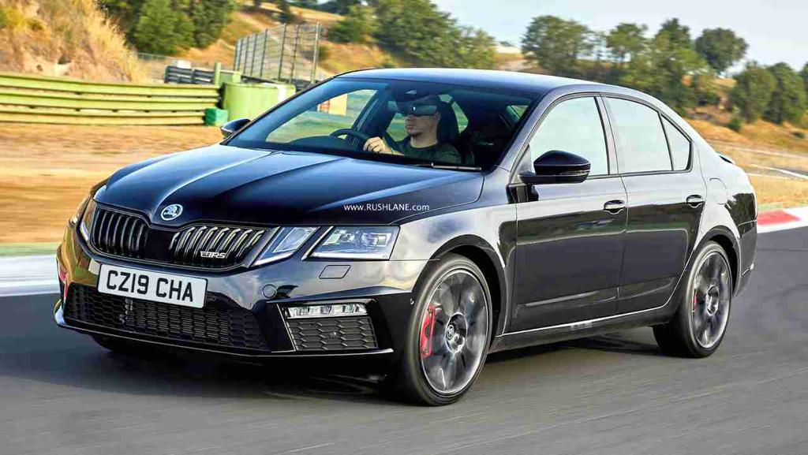

The Skoda Superb has 1 Petrol Engine on offer. The Petrol engine is 1984 cc . It is available with Automatic transmission.Depending upon the variant and fuel type the Superb has a mileage of 15.1 kmpl & Ground clearance of Superb is 156. The Superb is a 5 seater 4 cylinder car and has length of 4869mm, width of 1864mm and a wheelbase of 2841mm.
-Some key specifications:
City mileage: 11.1 kmpl
Engine Displacement:1984
Max Power:167.67bhp@3750rpm
Seating Capacity: 5
Fuel Type: Petrol
Transmission Type: Automatic
Boot Space: 625
Service Cost: (Avg. of 5 years)Rs.12,200
No. of cylinder: 4
Max Torque (nm@rpm): 320nm@1450-4200rpm
Fuel Tank Capacity: 66L
Ground Clearance Unladen: 156
Turbo Charged: Yes
Drive Type: FWD
For more details you can visit the official website:
